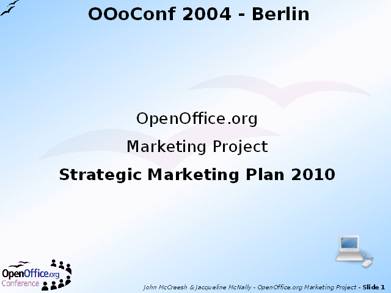

home
»
marketing
»
strategy
»
ooocon2004

Notes:
This presentation was delivered at the OpenOffice.org Conference in Berlin, Germany on 23 September 2004 on the occasion of the launch of Version 0.5 of the Strategic Marketing Plan.
These web pages were created by
Impress
, the presentations component with the OpenOffice.org office suite.
Thanks to the Open Clip Art Project for the clip art.